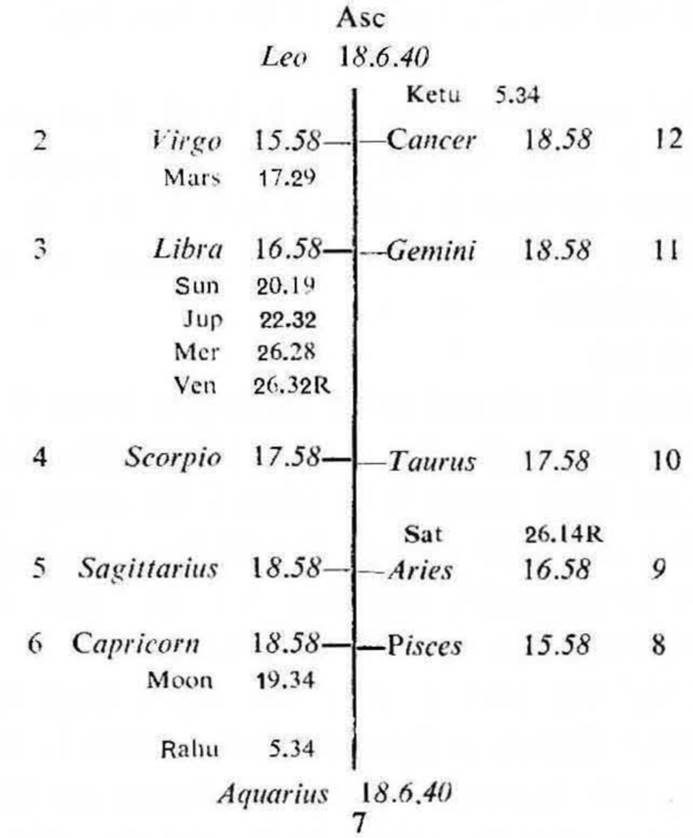
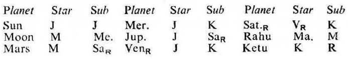
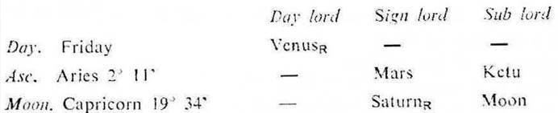

Question. When will my book be published?
Number. 97 (out of 249)
Place of Judgment. 23°N 2′, 72°E 35′
Time of Judgment. 6-11-1970, Friday; 4-55 p.m. I.S.T.


(a) Consider the houses 3 and 11 for writing and publication of books.
(b) If the cuspal sub lord of 3 and 11 be Mercury (writings) or Jupiter (publications) or if it be the significator of 3 and 11 and if the star lord of this cuspal sub lord be connected with Mercury and Jupiter the querent can write a book and publish it.
(c) During the joint period of the significators of 3 and 11 the book will be written and published. These significators are generally connected with Mercury, Jupiter and Mars (printing).
In this horary map the sub lord of Moon is Mercury (writings), it owns the 11th (sucess) and occupies the 3rd (publications). So Moon is connected with 3 and 11. Hence it indicates that the querent desires to have success in getting his writtings published.
3rd Cusp. The sub lord of the 3rd cusp is Venus. It is in the star Jupiter (publications) in 3. The star lord Jupiter is in conj. with Mercury and Venus owning 3. So Venus is the strong significator of 3. But as the cuspal sub lord of 3 (Venus) is retrograde, the movement for publication of a book will be made only after 3-12-1970 when Venus gets direct in motion.
11th cusp. The sub lord of the 11th cusp is Moon. It is in the sub Mercury; Mercury is direct in motion, it owns 11 (success), it is in conj. with Jupiter, the owner of 3 (Venus) and Sun (name). Thus Moon is connected with 3 and 11; and also with Mercury and Jupiter. Hence the querent will be successful in getting his book published.

Mars is in the sub of retrograde Saturn. Saturn is in the star of retrograde Venus. So Mars and Saturn may be omitted. Hence the ruling planets are Moon, Venus and Ketu.
At the time of judgment (Moon Dasha balance 2Y 9M 27D) the querent is running the joint period of Moon and Mercury which expires on 3-12-1970.
The ruling planets viz, Moon and Venus are the cuspal sub lords of 11 and 3 respectively; and they are also the strong significators of 3 and 11 as previously discussed. So the book will be published during the joint period of Moon and Venus which commences from 3-7-1971. Venus is very strong, so its inter period which continues upto 13-10-1971 will be very favourable. Hence during the joint period of Moon, Venus and Venus the book will be published.
The querent’s book was completely printed during September 1971 when Sun and Venus both were transitting in Leo in the star Venus (the sub and inter period ruler). The book was published during October 1971 when Sun was transitting in Virgo in the star Moon (the period ruler).